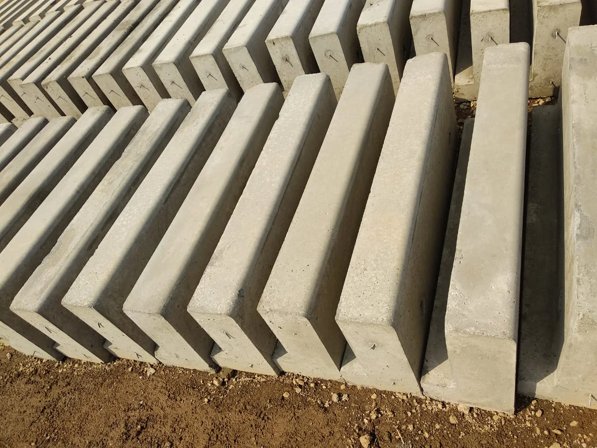

Look at the edge of any road, footpath or parking lot and you’ll find a kerb. Most people never think about it, yet it does a lot. Concrete Kerb Stones mark where a surface ends, hold the paving in place, guide rainwater and keep vehicles from drifting onto the walkway. Without a firm edge, roads crumble at the sides, pavements slowly spread and rainwater ends up where it shouldn’t.
These kerbs are precast, which means they’re cast in moulds, cured and delivered ready to install. The range covers L-shape kerbs with a built-in gutter, curved kerbs, and square and rectangular blocks in several heights and thicknesses. Once you know what to look for, you’ll see them along city roads, highways, roundabouts, parks, parking lots and industrial yards.
A concrete kerb stone is a precast concrete block or section laid along the edge of a road, footpath or paved area. It separates one surface from another and gives the edge a clean, firm line. Most of the range is high-strength precast concrete, and several products are listed in M30/M40 grade.
The shapes and sizes vary a lot, because a roadside kerb has a very different job from a garden border. A tall block on an embankment isn’t the same as a thin block around a flower bed. Here are the main types:
-
L-shape kerbs: Sold in 1000 x 350 x 125 mm and 1000 x 350 x 150 mm, with an integrated gutter channel. They suit busy roads and heavy traffic.
-
Curved kerb: The 900R L-shape kerb is 150 mm thick and made for bends, junctions and roundabouts.
-
Square blocks: 300 x 300 mm blocks in 60, 100 and 150 mm thickness, for borders, walkways and compact edging.
-
Rectangular blocks: 450 x 300, 600 x 300, 300 x 450 and 500 x 350 mm blocks for longer runs and taller barrier edges.
-
Colours: Natural concrete grey as standard. Some blocks also come in terracotta red and yellow, which is handy for marking cycle tracks and garden borders.
You could edge a road with brick, stone or just compacted soil, but few options give the same mix of strength and consistency. A precast kerb arrives in a known size and grade, so a long edge looks straight and behaves the same from one piece to the next. Buyers usually pick concrete for these reasons:
-
Strength: High-strength concrete, with M30/M40 grade on the heavy-duty products, stands up to vehicle impact.
-
A size for every job: From a 60 mm garden border to a 150 mm highway edge, there’s a block that fits.
-
Built-in drainage: The L-shape kerbs include a gutter channel, which helps carry water away from the road.
-
Colour choice: Terracotta red and yellow blocks make borders and cycle tracks easy to spot.
-
Quick installation: Precast pieces are laid straight from the delivery, with no waiting for concrete to set on site. That saves days on a busy project.
-
Low upkeep: No painting, no sealing. An occasional wash is usually enough, and the grey finish hides everyday dust.
-
Easy replacement: A damaged kerb can be lifted out and swapped for a new one.
Anywhere a paved surface needs a firm edge. Different sizes suit different places, so here’s how they usually match up:
-
City roads and main streets: L-shape kerbs line the carriageway and carry water along the gutter. The 125 mm version suits busy commercial avenues and industrial perimeters.
-
Highways and expressways: The 150 mm heavy-duty kerbs are chosen for heavy-vehicle corridors and national highways.
-
Roundabouts and junctions: The 900R curved kerb follows the bend of the road without awkward joints.
-
Parking lots: Medium-duty 100 mm blocks form the perimeter of car parks and estate driveways.
-
Petrol pumps and industrial yards: The 150 mm blocks handle service lanes, plant roads and heavy-vehicle parking.
-
Parks and garden paths: Thin 60 mm blocks edge walkways, cycle tracks and flower beds neatly, and they’re easy to handle by hand.
-
Embankments and raised footpaths: The tall 300 x 450 mm block gives a high barrier edge. It also works for public parks and highway dividers.
What makes these kerbs useful is mostly in the design, and each detail ties back to a real need on site. The main points:
-
Precast concrete: Made in a controlled setting, so sizes stay consistent and the finish is even from one block to the next.
-
M30/M40 grade: Listed on the L-shape, curved and heavy-duty blocks.
-
Thickness options: 60, 100, 125 and 150 mm, depending on the traffic. Thicker blocks go where the loads are heavier.
-
Integrated gutter profile: Built into the 1000 mm L-shape kerbs.
-
Curved radius: The 900R kerb is made for gentle bends.
-
Tall barrier profile: The 450 mm height of the 300 x 450 block creates a high edge for embankments and dividers.
-
Three colours: Grey, terracotta red and yellow, depending on the block.
-
Made in India: Produced domestically for outdoor use, in sizes that suit local roads and projects.
A good kerb rarely gets noticed, which is exactly the point. When it works, the road holds its shape and nobody thinks about it. Here’s what you gain:
-
A stronger road edge: The kerb holds the paving so the sides don’t break away or spread.
-
Protection from vehicles: Heavy-duty profiles resist impact from tyres at the edge of busy roads.
-
Better water control: Gutter profiles guide runoff along the road instead of across it.
-
Neat, straight lines: Uniform blocks make long edges look tidy and professional, even over several hundred metres.
-
Safer walking areas: A raised edge separates pedestrians from moving vehicles, which matters near schools, parks and market streets.
-
Lasting performance: Concrete handles sun, rain and years of traffic without much care, which suits public works that get little attention.
-
Good value: A kerb that rarely needs repair costs less over its life than one that keeps breaking.
The L-shape kerbs are 1000 x 350 x 125 mm and 1000 x 350 x 150 mm. Square blocks are 300 x 300 mm in 60, 100 and 150 mm thickness, and rectangular blocks include 450 x 300, 600 x 300, 300 x 450 and 500 x 350 mm.
M30 and M40 are concrete grades, and the number shows compressive strength in megapascals. Several heavy-duty kerbs in the range are listed in this grade.
The 150 mm heavy-duty L-shape and rectangular blocks are listed for highways, industrial zones and heavy-vehicle corridors. If you’re unsure, share the traffic details with your supplier before you order.
Natural concrete grey is the standard colour. Some square and rectangular blocks are also available in terracotta red and yellow.
Give them the length of the edge, the kind of traffic, the thickness you prefer and whether you need curves. That’s enough for them to suggest the right kerb and work out quantities. A rough sketch or a site photo can help too.